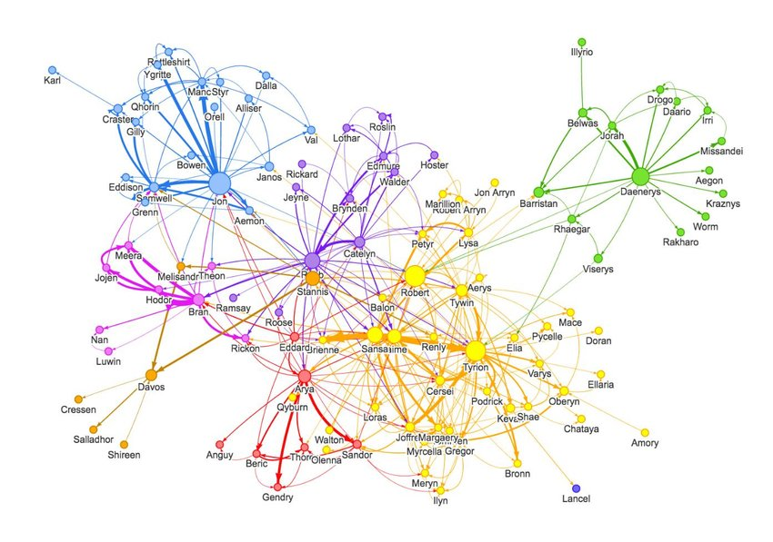

Exam 3 - 02 - Euler and Hamiltonian Paths
Ways to traverse a graph

The following topics of Exam 3 are generally about and related to Graph Theory. Graphs and their models deal with the relationships of objects and display them as a vertex with lines called edges that symbolize relation to another vertex. Graphs provide a powerful framework for representing and analyzing relationships of certain objects in real-life scenarios. For this topic, it describes the very definition of a graph as well as its different kinds and models. A simple graph has only one line or edge to one or more vertices. The multigraph has more than one line or edge directed to a vertex. A pseudograph has an edge directed at its own vertex. There are two types of graphs which are either directed or undirected. Directed illustrates a one-way relationship wherever the arrow is pointed. The pointed vertex cannot have a relationship with the original vertex unless it also points back to it. This concept applies to all 3 kinds (Simple, Multiple, Pseudo). The ones described without the word “directed” above are all undirected graphs. Understanding graphs create an easier understanding of whatever the graphs are representing. Graphs create a visual tool for easier understanding of most problems with relationships.
Used in:
- Internet and Web Networks
- Online Social Networks
- Computer Networks
- Image and Video Processing
Example 3.1.1 : A simple undirected graph of a network. A Token Ring Network graph of a Media Access Unit.
Example 3.1.2 : A complex directed graph that shows social relationships. In this case, this is an example of the social relationships between Game of Thrones Characters. In this example, from the orange node from the lower left corner, Cressen does not know Ser Davos but Ser Davos knows him.
This is only an assumption from the given graph that this is about who knows who since there is no way Ser Davos would not know who is Melisandr (receiving directed arrow above Davos node) else this graph is incorrect in using directed edges.
Understanding Graphs and their models is a refresher to the mind from the difficult understanding of Bayes Theorem in the previous topics. Graphing relationships and networks are easy to understand as it visually represents the relationship. Understanding the types and kinds of graphs is fundamental in understanding how to find the shortest paths, Euler and Hamiltonian paths, traveling salesman, and more. For me, this is probably the easiest topic to analyze and visualize as it uses almost little to no formulas at all in finding relationships. After all, graph theory is designed to represent relationships and make a better understanding of those difficult relationships easier.
Ways to traverse a graph

Finding shortest paths
King Igmedio Nicolai N. Behimino
(Shortcut: King N. Behimino)